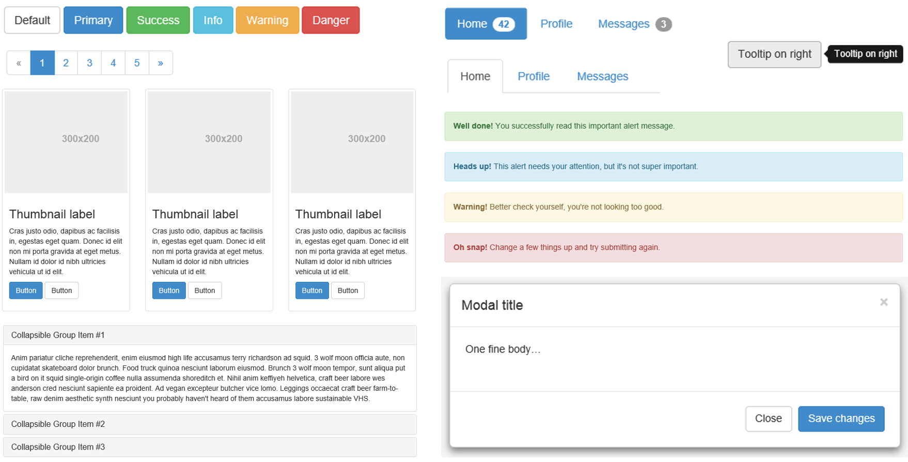

Creating the User Interface
Agenda
- Introduction to Jade
- Implementing Bootstrap
- Demo: Using Jade Templates with Bootstrap
- Demo: Creating the chat UI
Introduction to Jade
Templating with Jade?
- Jade is a templating language to simplify writing HTML
- SuppJade syntax and keywords map directly to HTML
- Jade adds the ability to separate and extend your HTML
- Helps prevent code repeat
- Ensures clean HTML is generated
- Allows you to insert values into HTML through templates
Templating with Jade
| Simple Tags | Output |
|---|---|
|
|
Templating with Jade
| Tags with Attributes | Output |
|---|---|
|
|
Templating with Jade?
The extends keyword allows a template to extend a layout or parent template. It can then override certain pre-defined blocks of content.
The block keyword allows you to establish a block or replace the content of pre-defined blocks.
Implementing Bootstrap
Bootstrap – Why use it?
- CSS can be tricky
- Cross browser support can be a challenge
- Solves basic tasks (e.g. page layout without tables)
- Bootstrap 3 makes it easier
Bootstrap Features
- Theme Support
- Responsive
- Grid system
- Components (Pagination, Buttons, Modal, etc.)
- Great Visual Studio support
Bootstrap Grid System
- Bootstrap works on a grid
- The grid has 12 columns
- There are four grids; one for each screen size
- Large (1200px and higher)
- Medium (992px-1200px)
- Small (768px-991px)
- Extra small (less than 768px)
Bootstrap Grid System
| Extra small devices Phones (<768px) | Small devices Tablets (>=768px) | Medium devices Desktops (>=992px) | Large devices Desktops (>=1200px) | |
|---|---|---|---|---|
| Grid behavior | Horizontal at all times | Collapsed to start, horizontal above breakpoints | ||
| Container width | None (auto) | 750px | 970px | 1170px |
| Class prefix | .col-xs- | .col-sm- | .col-md- | .col-lg- |
| # of columns | 12 | |||
| Column width | Auto | 60px | 78px | 95px |
| Gutter width | 30px (15px on each side of a column) | |||
Always 12 columns
Bootstrap Components
Bootstrap – Visual Studio Support
- CSS Class IntelliSense
- Updated templates and MVC scaffolding to use Bootstrap classes
- Web Essentials - Missing class detection
http://getbootstrap.com/

Demo
Using Jade Templates with Bootstrap
Demo
Creating the chat UI
Microsoft
© 2016 Microsoft Corporation. All rights reserved. Microsoft, Windows, Windows Vista and other product names are or may be registered trademarks and/or trademarks in the U.S. and/or other countries. The information herein is for informational purposes only and represents the current view of Microsoft Corporation as of the date of this presentation. Because Microsoft must respond to changing market conditions, it should not be interpreted to be a commitment on the part of Microsoft, and Microsoft cannot guarantee the accuracy of any information provided after the date of this presentation. MICROSOFT MAKES NO WARRANTIES, EXPRESS, IMPLIED OR STATUTORY, AS TO THE INFORMATION IN THIS PRESENTATION.